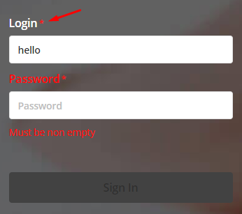

Проект
Основной проект на весь курс - квиз система.
Через админку создаем CRUD систему управления вопросами.
Через публичный сайт - прохождение квиза.
Задание от 2019.09.20
- Сделайте звездочку (*) через
псевдоэлемент
:after для обязательных к заполнению полей, например
формы авторизации. Используйте это на label через селектор .required:after для таких полей

-
Добавьте в проект
loading
для действий, требуемых ответа от сервера, например сохранения данных.
Сейчас он нам интересен только с визуальной стороны, например его можно разместить по центру
виджета,
который находится в процессе загрузки.
Например, если приложение квиза ещё грузится, то loading можно отобразить посередине формы.
Переключение видимости и позиционирование должно осуществляться через
display: noneиposition: absoluteДругой кейс, когда кнопка недоступна в связи с обработкой сервером формы. Вот пример loading, только в виде линии на кнопке
- (опционально) Добавьте пример вопроса с картинкой.
-
Подключить иконки в проект
На выбор раз два три -
Подключить шрифт в проект
- Изи левел для шрифтов в проект
- А вот этот инструмент подходит для перегенерации в веб шрифт из любого шрифта
- (опционально) Попробовать подключить WYSIWYG редактор в проект вместо textarea раз два